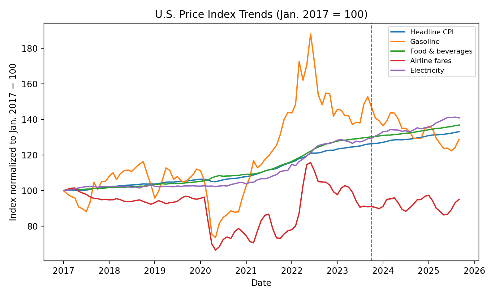
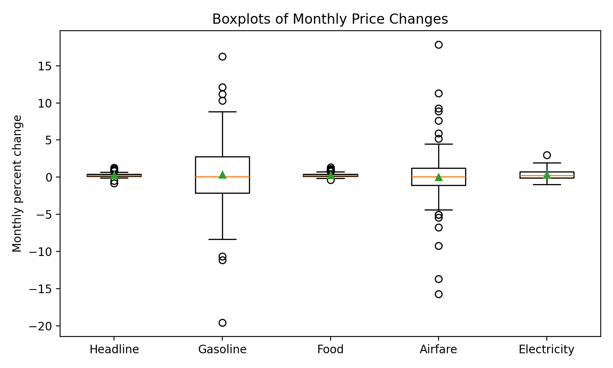
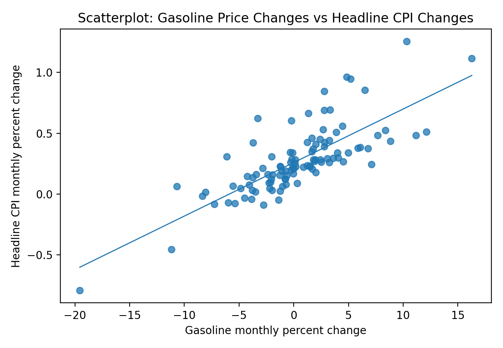
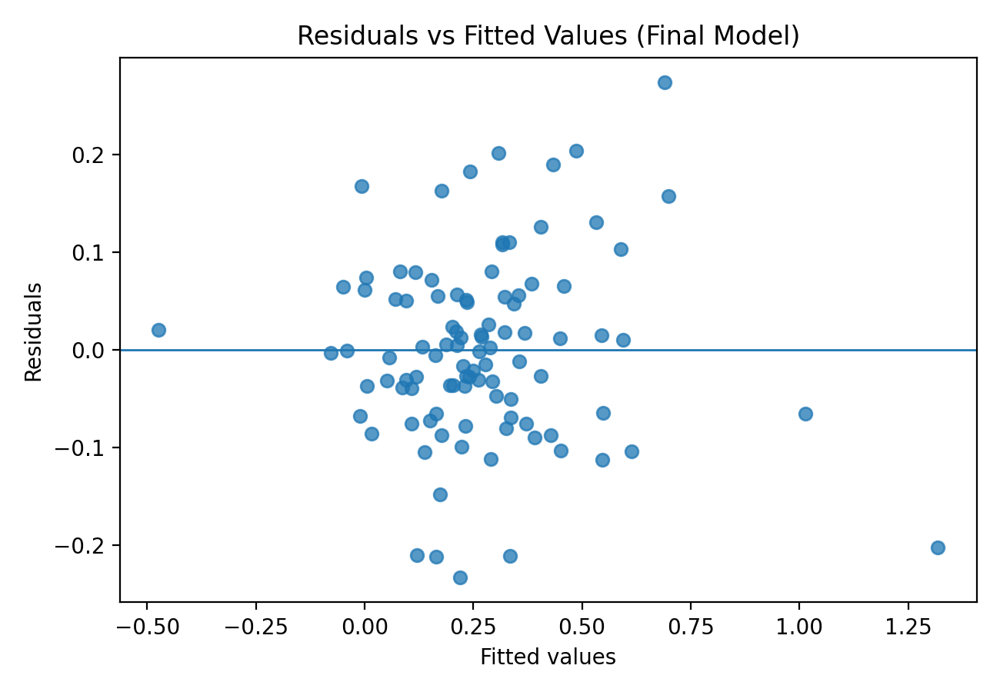

Analyzing the Impact of Middle East Conflict on U.S. Consumer Prices
An exploratory regression study of how changes in gasoline, food, airline fares and electricity prices relate to monthly U.S. headline inflation—and whether a broad conflict-period indicator adds explanatory power.
The research question
Does the period beginning in October 2023 have an additional statistical relationship with U.S. monthly headline CPI changes after accounting for changes in key consumer price categories?
Data and approach
The team analyzed 104 monthly observations covering February 2017 through September 2025, using publicly available consumer price series cited in the project report from the U.S. Bureau of Labor Statistics and FRED. CPI indices were transformed into month-over-month percentage changes. The regression included gasoline, food and beverages, airline fares, electricity, and an indicator for October 2023 onward.
The analysis included exploratory summaries, visualizations, multiple regression, residual diagnostics and multicollinearity checks. Five observations with absolute standardized residuals greater than 2.5 were excluded from the final reported model. This choice is a modeling limitation, not evidence that those months were unimportant.
Key findings
In the reported final regression, changes in gasoline, food and beverages, airline fares, and electricity were positively and statistically significantly associated with monthly headline CPI changes. The conflict-period indicator was not statistically significant after those categories were included (p ≈ 0.894).
| Predictor | Coefficient | Reported significance |
|---|---|---|
| Gasoline | 0.0356 | p < 0.001 |
| Food & beverages | 0.3093 | p < 0.001 |
| Airline fares | 0.0214 | p < 0.001 |
| Electricity | 0.0663 | p < 0.001 |
| Conflict-period indicator | 0.0032 | p = 0.894 |
Visual evidence from the analysis
The figures below are reproduced from our Spring 2026 group report. They illustrate observed price movements and model diagnostics; they do not establish that the conflict caused inflation.




Interpretation and limitations
The results support monitoring several consumer-price channels together rather than focusing only on gasoline. For business planning, category-specific inflation dashboards may help teams identify changing costs, while broader geopolitical indicators would be needed to evaluate conflict-related risks more directly.
My contribution
I contributed to data collection, R coding, development of visualizations and report writing. The project was completed collaboratively with Yannick Tebuka. This page summarizes the group's reported findings; it does not attribute all modeling decisions or results to one contributor.
Project materials
The original report includes exploratory plots, diagnostic charts, model output and references. The four figures above are reproduced from the original group report. Code and full supporting materials can be linked separately after review for accuracy, attribution and publication suitability.